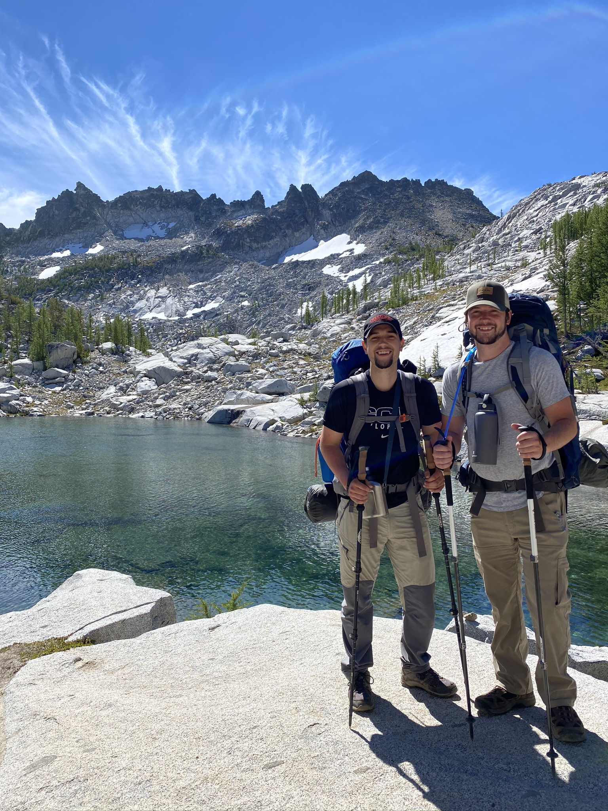
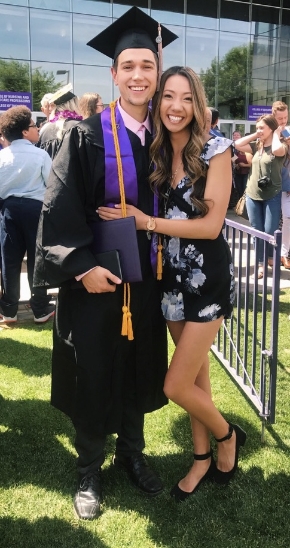
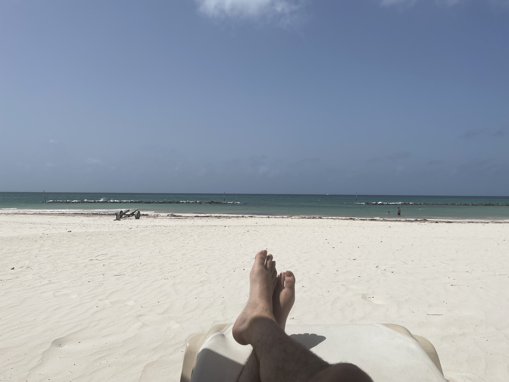

About Me
Welcome to my web page !
Background
I was born and raised in Arlington Washington. I attended school at the Lakewood School District from 7th to 12th grade, and before that I attended Grace Academy in Marysville. I have always had the bug for adventure, which drew me into a love for hiking and backpacking. I spent most of my free days in highschool hiking and backpacking with my friends all over Washington! When it was time to decide on where I wanted to go for college, I made the decision to move to Arizona and explore new terrains!

Education
- In Arizona I attended Grand Canyon University in Phoenix.
- There I quickly joined the outdoors club and became one of the lead officers.
- I studied business management and graduated in three years with my bachelor's degree.
- GCU is where I also met my beautiful wife Taylor!
- Currently I am taking online courses at Code Fellows in Seattle in order to pursue a career in Software Development.

Job Experience
- After I graduated from Grand Canyon University in 2017, I started working at Enterprise Rent-A-Car in Seattle.
- While I was employed with Enterprise, I worked at seven different stores and eventually was promoted to branch manager in Lake City.
- There I trained and managed my assistant managers and management trainees while operating the store.
- I was with Enterprise for about four years when I decided to make a change and start learning coding here at Code Fellows!

“Home.” Rental Cars at Low, Affordable Rates | Enterprise Rent-A-Car, https://www.enterprise.com/en/home.html.
Goals
My goals are to land a software development job in the Seattle Area and have more flexibility with work life balance than I had with my previous job. I dream to travel and have the ability to work remotely and make an impact in the software development relm!

Top Ten Favorite Hikes
- The Enchantments - WA
- Havasupai - AZ
- The Grand Canyon - AZ
- Buckskin Gultch - AZ/UT
- Angle's Landing - UT
- Hidden Lake Lookout - WA
- FLat Iron - AZ
- Dorothy Lake - WA
- Humphreys Peak - AZ
- Goat Lake - WA